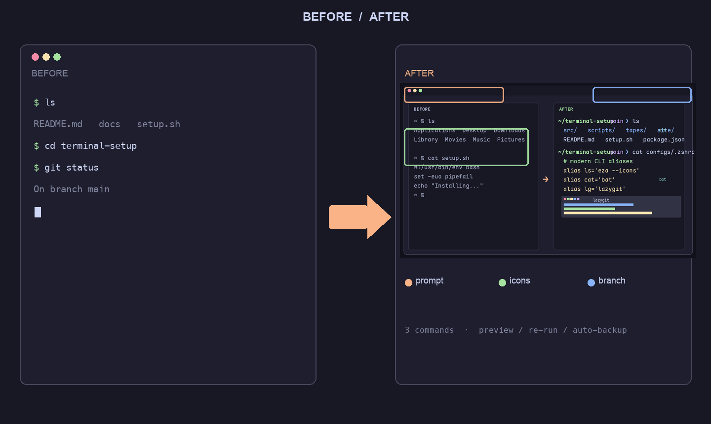

🎨 主题统一
Starship 提示符自动跟随系统明暗模式。
Polar Bear · 终端安装器
旧配置自动备份 · 可 --dry-run 预览 · 重复运行不会弄坏环境
不是又一个 dotfiles 仓库，而是一个可预览、可重跑、装不坏的终端安装器。
Polar Bear 一键装好 Zsh、Catppuccin 主题的 Starship 提示符，以及 eza / bat / fzf / zoxide / lazygit / delta 等现代 CLI。macOS 与 Linux 通用，不换终端、不用手动调配置。

Starship 提示符自动跟随系统明暗模式。
eza / bat / fd / rg / fzf / zoxide / lazygit / delta 全覆盖。
零配置，几分钟搞定；本机自定义不丢。
用你现有的终端就行，推荐 Warp（可选）。
Maple Mono NF CN 字体，图标不乱码、中文清晰。
--dry-run 先打印每一步，非交互不卡死。
| 组件 | 说明 |
|---|---|
| Starship | 跨 Shell 提示符（Catppuccin Mocha） |
| eza / bat / fd / rg | 更现代的 ls / cat / find / grep |
| fzf / zoxide | 模糊搜索 + 智能目录跳转 |
| lazygit / delta | Git 终端 UI + 高亮 diff |
| fastfetch / btop | 系统信息与监控 |
| fnm / uv | Node / Python 版本与包管理 |
macOS / Debian / Ubuntu / WSL 通用。
先读脚本再运行：下面两条命令都会安装工具并写入 dotfiles，建议先打开 setup.sh 看一遍。
bash <(curl -fsSL https://raw.githubusercontent.com/webxiongda/terminal-setup/main/setup.sh)
或者克隆后手动审查再安装：
git clone https://github.com/webxiongda/terminal-setup.git && cd terminal-setup && ./setup.sh
选项：--dry-run 预览 · --skip-node 跳过 Node · --reinstall 重装